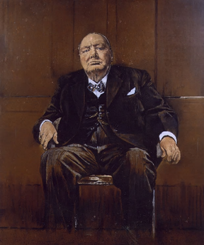
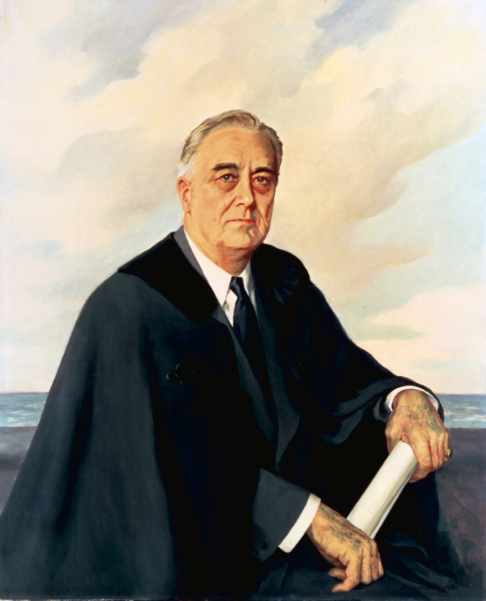
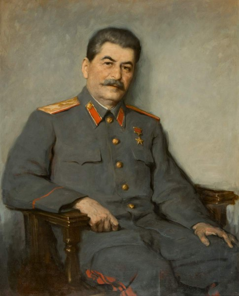
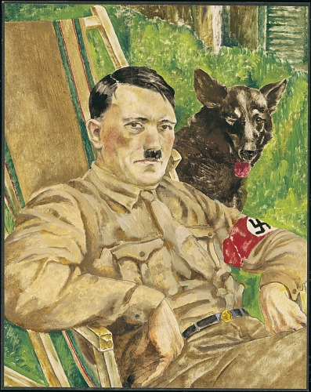
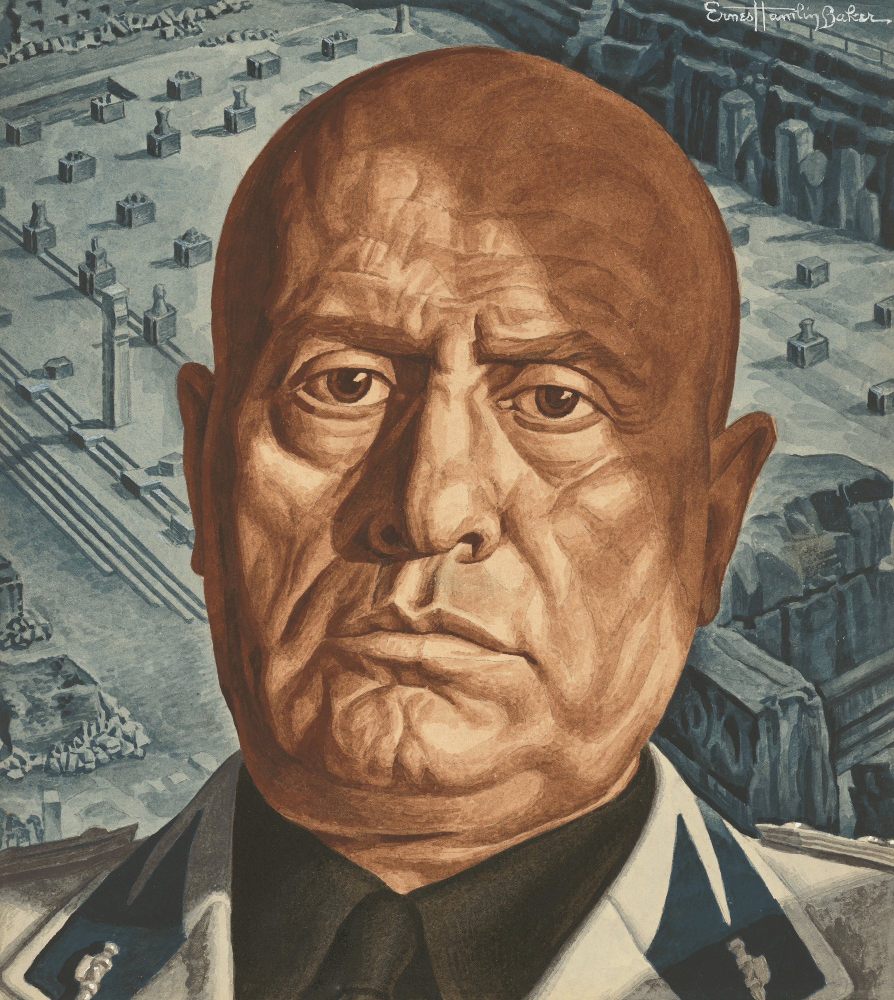
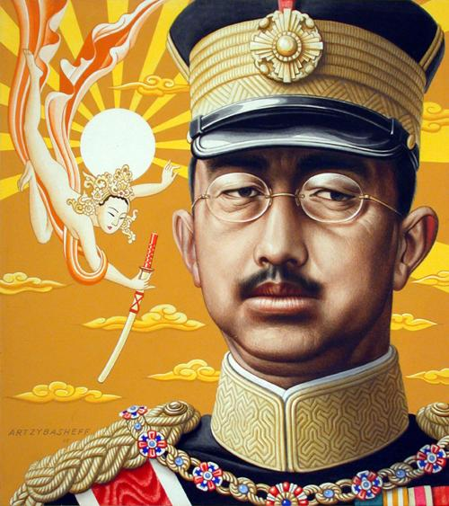
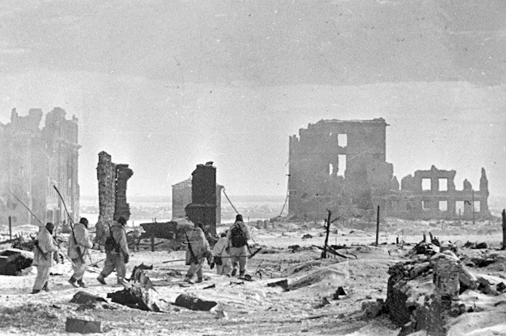
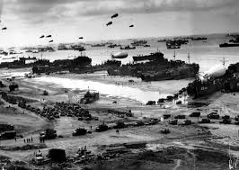
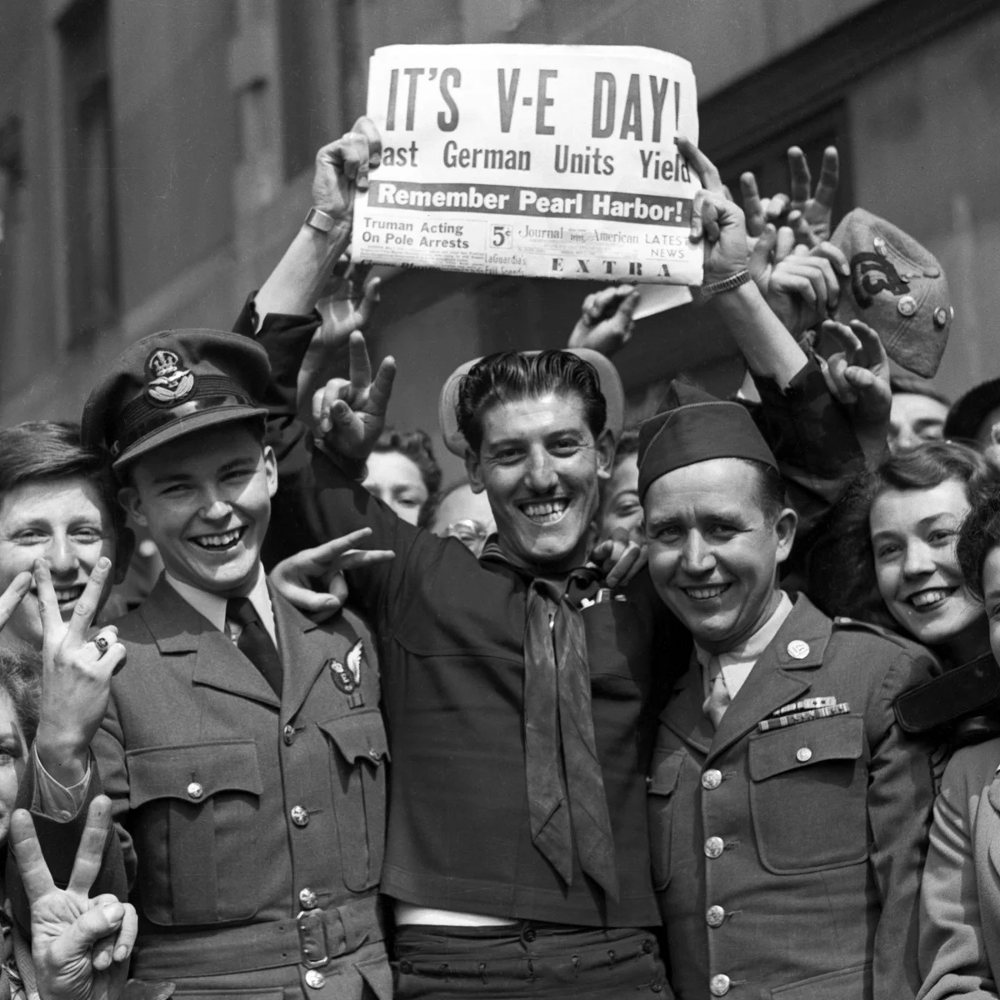

Fighting WWII
and the Holocaust
On June 6, 1944, nineteen-year-old J.D. Salinger waded ashore at Utah Beach in Normandy, France. He was a soldier in the 4th Infantry Division. By the end of that single day, more than 4,400 Allied soldiers were dead. Salinger survived, went on to write one of the most famous novels in American history, and reportedly never fully recovered from what he witnessed. He carried it for the rest of his life.
World War II was fought on every continent except Antarctica. It involved more than thirty nations and killed an estimated 70 to 85 million people, roughly three percent of the entire world's population in 1940. Most of those who died were not soldiers. They were civilians: farmers, children, factory workers, and families caught inside a war they did not choose.
And within the larger horror of the war, one government carried out a systematic, deliberate program to murder an entire group of people simply because of who they were. That program killed six million Jewish people and millions of others. It has its own name. It is called the Holocaust.
Leaders and Sides: The Allied Powers vs. The Axis
The war divided the world into two main sides. The Allied powersAllied powers: the countries that fought together against the Axis in WWII, primarily the United States, Britain, the Soviet Union, France, and China. were led by Britain, the Soviet Union, and the United States. The Axis powers were led by Germany, Italy, and Japan. Each side was directed by leaders whose personalities, decisions, and mistakes shaped the course of the entire conflict.
ALLIED LEADERS

Refused to negotiate with Hitler; kept Britain fighting alone in 1940

Led the U.S. into the war after Pearl Harbor; managed the two-front global strategy

Led the Soviet Union after Germany's surprise invasion; the Eastern Front became the war's bloodiest theater
AXIS LEADERS

Ordered the Holocaust; made the fatal decision to invade the Soviet Union

Allied Italy with Germany; overthrown by his own government in 1943 after Allied invasion

Led Japan's Pacific empire; authorized the attack on Pearl Harbor
These six leaders made decisions that determined whether millions of people lived or died. Some showed courage under impossible pressure. Others issued orders that history has judged as crimes against humanity. Understanding who they were and what they chose helps explain how this war became so total and so devastating.
Turning Points: The Battles That Changed Everything
From 1939 to 1942, the Axis powers won almost everywhere. Germany conquered most of Europe. Japan swept across Asia and the Pacific. Italy held North Africa. The Allied powersAllied powers: the countries that fought together against the Axis in WWII, primarily the United States, Britain, the Soviet Union, France, and China. were on the defensive. Then, between 1942 and 1944, the tide turned in four critical battles. Each one is called a turning pointTurning point: a battle or event that marks the moment when one side in a war shifts from losing to winning, or stops the enemy's advance..
June 1942. The U.S. Navy destroyed four Japanese aircraft carriers in four days in the Pacific Ocean. Japan never fully recovered its naval power. This stopped Japan's expansion eastward and gave the United States the initiative in the Pacific.
The bloodiest single battle in human history. Germany attempted to capture the Soviet city of Stalingrad. After six months of street-by-street fighting in brutal winter conditions, the entire German 6th Army was surrounded and forced to surrender. An estimated 800,000 Axis soldiers were killed, captured, or wounded. Germany never advanced deep into the Soviet Union again.
June 6, 1944. The largest seaborne invasion in history. More than 156,000 Allied troops crossed the English Channel and stormed five beaches in German-occupied France. Within a year, Allied forces had liberated Paris and pushed into Germany from the west while the Soviet Union pushed from the east. Germany was being crushed from both sides.
American forces developed a strategy of capturing key Pacific islands and using them as stepping stones toward Japan. Battles at Guadalcanal, Iwo Jima, and Okinawa were some of the bloodiest of the war. Each island brought the U.S. closer to the Japanese home islands and the final confrontation.

The Eastern Front between Germany and the Soviet Union was the largest and bloodiest theater of the entire war. Approximately 30 million Soviet citizens died between 1941 and 1945, including both soldiers and civilians. Nearly every Soviet family lost someone. This scale of death shaped Soviet foreign policy, Russian national identity, and the Cold War that followed for decades afterward.
- Question 1: Meaning What is Eisenhower trying to accomplish with this message? What does he want the soldiers to feel as they go into battle?
- Question 2: Connect to the EQ D-Day involved more than 156,000 soldiers in a single day. How does the scale of this operation connect to the question of why WWII became the deadliest conflict in human history?

The Holocaust: A Systematic Murder
While the war was being fought on the battlefields, the Nazi German government was simultaneously carrying out a separate, organized program of mass murder. This program is called the HolocaustHolocaust: the systematic, state-sponsored murder of six million Jewish people and millions of others by the Nazi German government and its collaborators during WWII.. It targeted Jewish people above all others, but also Roma, disabled people, LGBTQ individuals, political opponents, Soviet prisoners of war, and others the Nazis labeled as enemies or subhuman.
The Holocaust did not begin with murder. It began with laws. Starting in 1933, the Nazi government passed legislation that stripped Jewish Germans of their citizenship, their jobs, and their legal rights. The goal was to make Jewish life in Germany impossible. This ideology was called racial purity: the belief that German society had to be cleansed of anyone the Nazis defined as racially inferior. That ideology, combined with total government power, led step by step to genocideGenocide: the deliberate, organized attempt to destroy an entire group of people based on their race, ethnicity, religion, or nationality..
Nuremberg Laws passed. Jewish Germans lose citizenship. Intermarriage between Jewish and non-Jewish Germans is made illegal. Jewish businesses are boycotted.
Kristallnacht. On November 9 and 10, Nazi mobs attack Jewish synagogues, homes, and businesses across Germany and Austria. Over 7,000 Jewish-owned businesses are destroyed. Approximately 30,000 Jewish men are arrested and sent to concentration camps. The broken glass gives the night its name: Night of Broken Glass.
Mobile killing units called Einsatzgruppen follow German armies into the Soviet Union. They shoot Jewish communities en masse. At Babi Yar near Kyiv, Ukraine, 33,771 Jewish people are shot over two days in September 1941. It is one of the largest single massacres of the Holocaust.
The Final SolutionFinal Solution: the Nazi plan to murder all of Europe's Jewish population, carried out through death camps equipped with gas chambers. is formalized at the Wannsee Conference. Nazi leaders meet outside Berlin and plan the systematic murder of all Jews in Europe. Death camps are built in occupied Poland: Auschwitz-Birkenau, Treblinka, Sobibor, Belzec. Millions of people are transported by train and murdered on arrival.
Allied forces liberate the death and concentration camps in spring 1945. Soldiers who enter the camps are unprepared for what they find. Six million Jewish people are dead. An estimated five to six million additional victims, including Roma, disabled people, Soviet POWs, and others, have also been murdered.

The Holocaust required thousands of ordinary people to participate or look away. Train conductors drove the trains. Bureaucrats processed the paperwork. Soldiers carried out the orders. Neighbors reported Jewish families in hiding. Historians have spent decades studying how a modern, educated government was able to organize industrialized murder on this scale. The answer involves propaganda, dehumanization, fear, obedience to authority, and the slow removal of moral red lines one step at a time.
- Question 1: Meaning What does Wiesel mean when he says "his faith" was consumed? What kind of faith might a fifteen-year-old lose on his first night in a death camp?
- Question 2: Connect to the EQ How does Wiesel's testimony help explain why WWII became the deadliest conflict in human history? Think beyond battlefield casualties.
The War Ends: Victory, Atomic Bombs, and the World Left Behind
By early 1945, Germany was collapsing. Soviet forces were closing in from the east. American, British, and French forces were pushing in from the west. On April 30, 1945, with Soviet troops less than a mile from his underground bunker in Berlin, Adolf Hitler killed himself. Germany surrendered seven days later on May 8, 1945. Europe called it V-E Day: Victory in Europe Day.


Japan refused to surrender after Germany fell. American leaders faced a decision with no good options. A land invasion of Japan was estimated to cost hundreds of thousands of American lives and potentially millions of Japanese lives. President Harry Truman chose a different path. On August 6, 1945, the United States dropped an atomic bomb on the Japanese city of Hiroshima. An estimated 80,000 people died instantly. Tens of thousands more died from radiation in the weeks and months that followed. Three days later, a second bomb was dropped on Nagasaki, killing an estimated 40,000 more people immediately. Japan surrendered on September 2, 1945. World War II was over.
Total WWII deaths: 70 to 85 million people, roughly 3% of the world's entire population.
Soviet Union: approximately 27 million dead, the highest of any nation.
China: approximately 20 million dead.
Poland: approximately 6 million dead, including 3 million Polish Jews.
Germany: approximately 8 million dead.
United States: approximately 420,000 military dead.
Holocaust victims: 6 million Jewish people. 5 to 6 million others targeted by Nazi genocide.
The world that existed after 1945 was fundamentally different from the world that had existed before. The United States and the Soviet Union emerged as the two dominant global powers. The United Nations was created specifically to prevent another world war. The Nuremberg Trials held surviving Nazi leaders accountable for crimes against humanity. The concept of genocide was formally defined in international law. And a cold war between the U.S. and Soviet Union began immediately, creating fifty years of tension that shaped every corner of the globe.

After Japan attacked Pearl Harbor on December 7, 1941, President Roosevelt signed Executive Order 9066 in February 1942, forcibly removing approximately 120,000 Japanese Americans from their homes on the West Coast. Many were from San Diego and the surrounding region. Families were given days to sell or abandon their possessions and were sent to incarceration camps in the California desert and other remote locations. The largest camp was Manzanar, in the Owens Valley northeast of Los Angeles.
At the same time, San Diego's military presence exploded. The city became the primary embarkation point for the Pacific theater, and Convair and other defense manufacturers transformed the local economy. The tension between the injustice done to Japanese American families and the patriotic sacrifice of many of those same families, including the 442nd Regimental Combat Team made up entirely of Japanese Americans, is a defining story of San Diego and Southern California in WWII.

- "What Is Genocide? Lessons from the Holocaust for Today" — U.S. Holocaust Memorial Museum
- "Holocaust remembrance: Why the world still forgets" — BBC
- "Genocide Prevention: The Warning Signs That Still Appear Today" — AP News
Genocide has happened multiple times since the Holocaust. Cambodia in the 1970s. Rwanda in 1994. Bosnia in 1995. Darfur in the 2000s. The international community has responded inconsistently every time. The United Nations created a formal genocide prevention framework, but enforcement depends on the political will of powerful countries. In every case, historians have noted that the same warning signs appeared first: dehumanizing language, scapegoating a group, state-controlled media, and the removal of legal protections. These patterns are documented, teachable, and recognizable. The question is whether the world acts on what it knows.
Elie Wiesel said the opposite of love is not hate, it is indifference. Looking at the list of genocides that happened after the Holocaust, do you think the world learned what it needed to learn from WWII? What would actually change things?